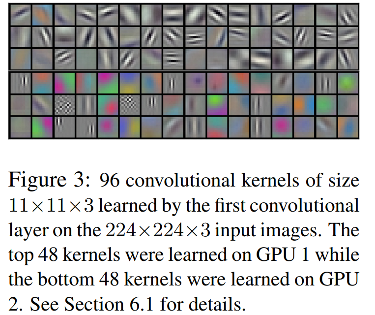
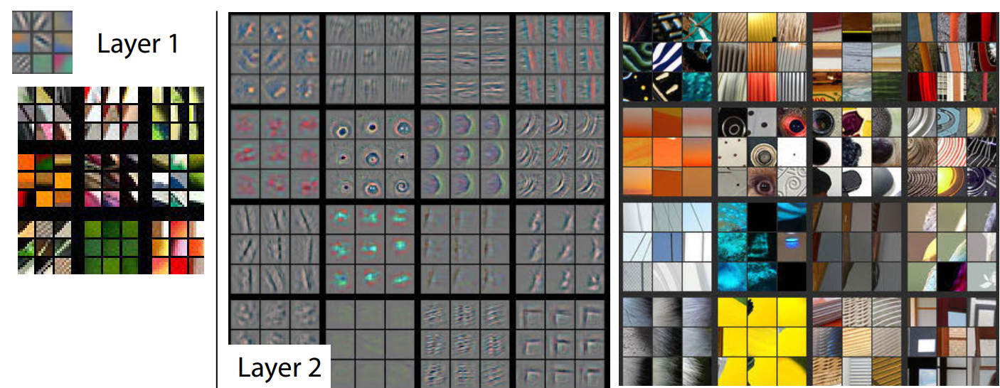
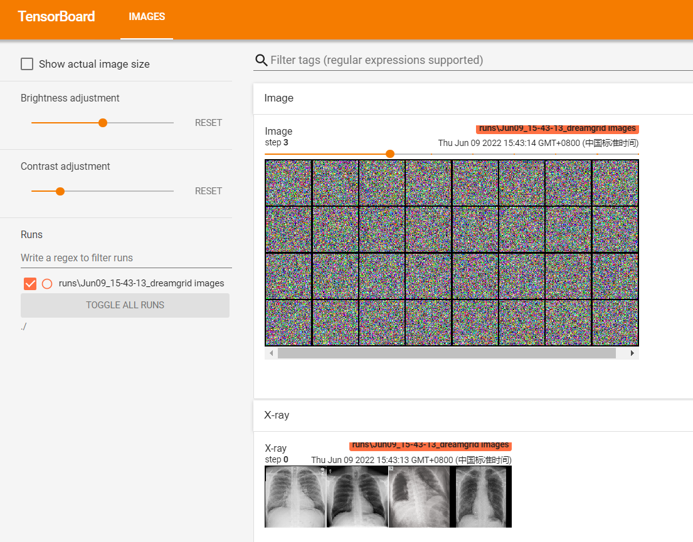
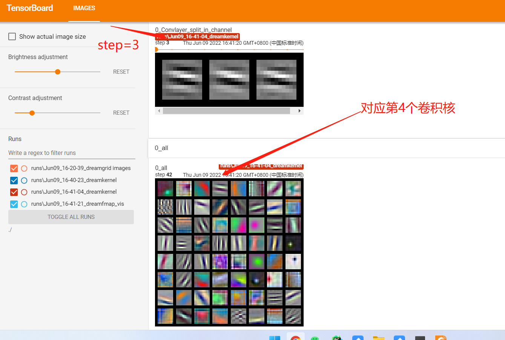
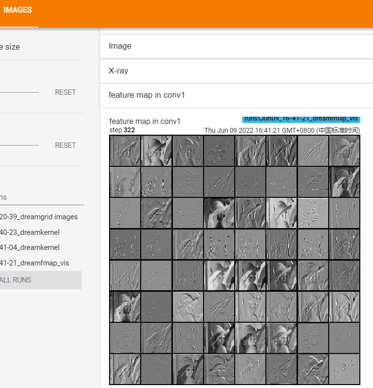
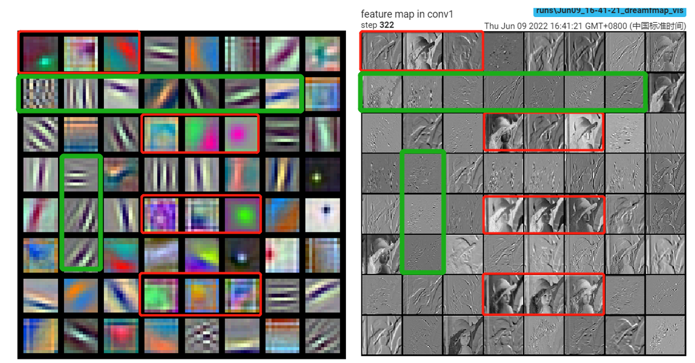

6.2 CNN卷积核与特征图可视化
众所周知，深度学习仍是一个黑盒子，模型内部的逻辑含义仍旧无法解释，越是未知的东西，越能激起人们的好奇心。
在卷积神经网络中，有时会对卷积核以及特征图进行可视化，以此观察卷积神经网络学习到了何种模式。
作为深度卷积神经网络的开山之作，AlexNet（2012年）就已经对卷积核的模式进行了分析，论文中发现卷积核的学习具有偏向性，一部分学习颜色特征，一部分学习边缘特征，详见下图：

紧接着AlexNet之后的2013年，ZFNet对CNN的特征图进行了可视化，进一步的探究卷积神经网络的奥秘。

AlexNet：《ImageNet Classification with Deep Convolutional Neural Networks》
ZFNet：《Visualizing and understanding convolutional networks》
本节就利用tensorboard以及pytorch的函数对AlexNet的卷积核与特征图进行可视化。
make_grid 函数
在图像任务中，往往需要人眼审核、观察大批量图像数据，如果一张一张的观察，效率会非常低。
通常会将一批数据绘制成网格图片，类似大排档的菜单一样，这样便于观察。
在pytorch的torchvision库中，提供了make_grid函数帮助大家完成网格图片制作。下面先学习make_grid函数，再用它绘制卷积核与特征图。
`torchvision.utils.make_grid(tensor: Union[torch.Tensor, List[torch.Tensor]], nrow: int = 8, padding: int = 2, normalize: bool = False, value_range: Optional[Tuple[int, int]] = None, scale_each: bool = False, pad_value: float = 0.0, **kwargs)
功能：
将一组图片拼接成一张网格图片，便于可视化。
参数：
tensor(Tensor or list)- 需可视化的数据，shape:(B x C x H x W) ,B表示batch数，即几张图片
nrow(int)- 一行显示几张图，默认值为8。
padding(int)- 每张图片之间的间隔，默认值为2。
normalize(bool)- 是否进行归一化至(0,1)。
value_range(tuple)- 设置归一化的min和max，若不设置，默认从tensor中找min和max。
scale_each(bool)- 每张图片是否单独进行归一化，还是min和max的一个选择。
pad_value(float)- 填充部分的像素值，默认为0，即黑色。
关于输入：make_grid的输入可以分为两种：
- 一种是4D张量，函数自动将第一维度作为图片数量进行拆解。
- 一种是list，元素必须是张量形式，并且张量的shape必须一致。
这两种输入分别对应两种常用场景：
- 4D张量：卷积核大小与特征图张量都适合用这种形式。
- list：对普通图片进行可视化观察，一次加载一张图片时使用。
另外，对于像素的转换也需要注意相应策略，对于float类型的数据，需要设置归一化的策略，策略由value_range和scale_each构成，请自行调整观察变化。
请看代码使用效果:

Alexnet卷积核可视化
要对卷积核进行可视化，就需要对pytorch的nn.Module类非常熟悉，要了解卷积核以怎样的形式？存储在哪里？
2D卷积的卷积核权重是一个4D张量，包含输入通道，输出通道，高，宽。
注意：除了第一层可以将 输入通道 *高*宽作为 RGB图像进行可视化之外，其余网络层只能将高*宽作为灰度图像（2D）进行可视化。
卷积核存储在nn.Conv2D的weight变量中，下面就可以通过如下代码获得。
for sub_module in alexnet.modules():
# 非卷积层则跳过
if isinstance(sub_module, nn.Conv2d):
# 获取conv2d层的权重，即卷积核权重
kernels = sub_module.weight
有了4D张量，剩下就按部就班的绘制到grid中可视化即可，完整代码生成的可视化图像如下所示：

可以看到，alexnet模型的第一层的卷积核确实学习到了不同模式，有边缘模式，有色彩模式。
Alexnet特征图可视化
特征图可视化与卷积核可视化类似，需要知道特征图以怎样的形式？从哪里获得？
常规任务中，特征图是4D张量（BCHW）。
但是获得就没有那么简单，因为特征图是中间数据，通常不会保留，在前向运算过程中，不再使用的特征图会被舍弃。
因此需要特殊方法获得特征图，本节介绍一种笨办法，但容易理解，就是将对应层（仍旧是一个nn.Module）拿出来，然后把图片仍给网络层（仍旧是一个nn.Module），其输出的就是特征图了。
更高级的方法是利用hook函数机制完成中间特征图的获取，这个在本章的后半部分会介绍。
请看核心代码
alexnet = models.alexnet(pretrained=True)
# forward
convlayer1 = alexnet.features[0]
fmap_1 = convlayer1(img_tensor)
这样就获得了(1, 64, 55, 55)的4D张量（fmap_1），然后将其转换成能可视化的形式，再利用tensorboard绘制。
完整代码生成的可视化图像如下所示：

小结
本节介绍了tensorboard对卷积核与特征图的绘制，其中涉及非常实用的函数make_grid，make_grid可以帮助开发人员高效的审核图片，人眼看图是算法工程师最重要的一步，因为模型是没办法知道哪张图片的标签搞错了！
下一小节将介绍在模型训练过程中，如何基于tensorboard进行监控模型状态。
最后留一个思考题，将卷积核与特征图放到一起去比较，大家能否找到什么规律？
边缘模式的卷积核似乎能过滤掉大部分细节，仅留下边缘；还能看到清晰原图信息的特征图所对应的卷积核，都是颜色卷积核。
